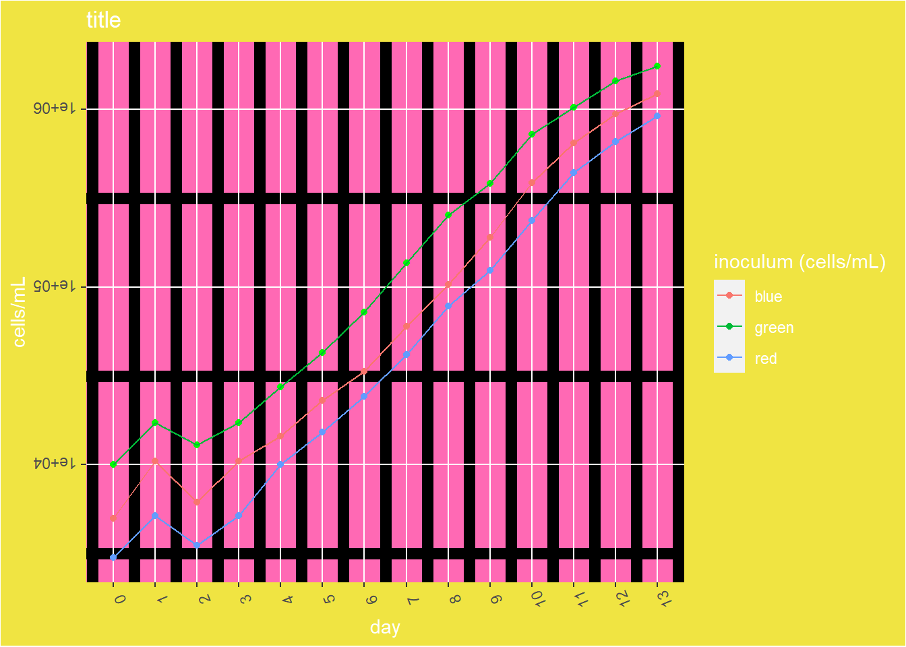

Let’s create a BAD PLOT of some Synechococcus sp. WH7803 growth curves. There are three different growth curves from a range of starting inoculum densities.
#calling the package tidyverselibrary(tidyverse)#importing our datasyn <-read.csv("hmkBP.csv")#checking the data view(syn)#get crazy ggplot(syn) +geom_point(aes(x = day, y = cells.mL, color ="red")) +geom_point(aes(x = day, y = cells.mL.1, color ="blue")) +geom_point(aes(x = day, y = cells.mL.2), color ="green") +geom_line(aes(x = day, y = cells.mL, color ="red")) +geom_line(aes(x = day, y = cells.mL.1, color ="blue")) +geom_line(aes(x = day, y = cells.mL.2, color ="green")) +scale_y_continuous(trans='log10') +scale_x_continuous(breaks =seq(0, 13, 1)) +xlab("day") +ylab("cells/mL") +ggtitle("title") +labs(colour="inoculum (cells/mL)") +theme(axis.text.x =element_text(angle =112), axis.text.y =element_text(angle =180)) +theme(panel.grid.minor =element_line(size =3, color ="black")) +theme(panel.background =element_rect(fill ='hotpink')) +theme(plot.background =element_rect(fill ="#F0E442")) +theme(legend.background =element_rect(fill ="#F0E442")) +theme(text =element_text(color ="white"))

WHY is this so terrible?
Figures should encourage the eye to compare different data (Tufty, Principles of Graphical Excellence, pg 61-63). This graph has so many contrasting colors, its hard for the eye to go directly to the data.
Eliminate as much non-data as possible, data to ink ratio should favor data (Tufty, Principles of Graphical Excellence, pg 91-92). The focus on grid-lines and background fill colors obviously break this rule.
Make labeling left to right so its easier to for the eye to read (Tufty, Principles of Graphical Excellence, pg 186). Both the X and Y axis have their labels rotated.
Ensure the graphs don’t distort, hide, or manipulate the data (Tufty, Principles of Graphical Excellence, pg 54). The data is clearly hidden in the heavily edited panel background and thick grid-lines, additionally the background is very close in color to one of the sample lines.
Tell the truth about the data. (Tufty, Principles of Graphical Excellence, pg 53). The legend does not list the actual starting densities of each culture. Additionally, the legend has the colors indicated wrong.
Use color as a tool to distinguish (Fundamentals of Data Vis, Wilke, ch 4.1). The legend, title, and axis titles are all white against a yellow background making it difficult to distinguish between them.